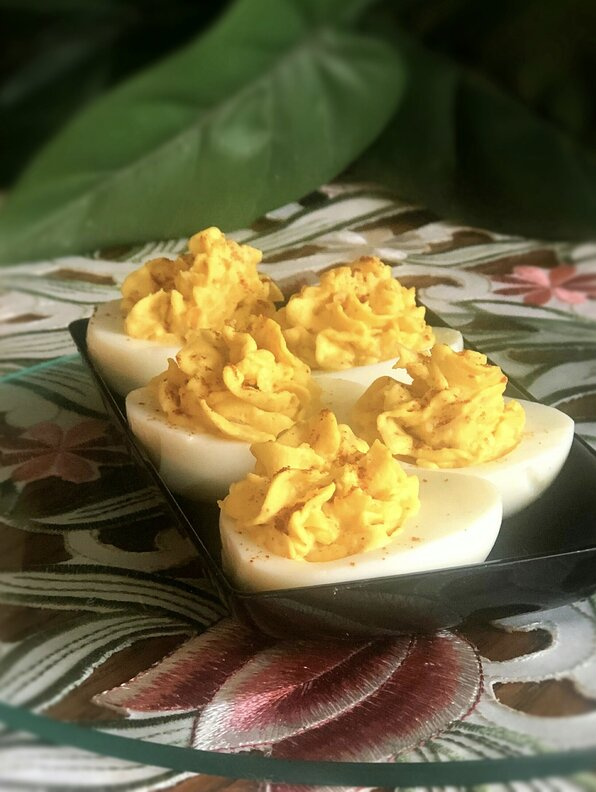

Fully Loaded Deviled Eggs Recipe

Deviled Eggs
My children and husband go nuts over these. I made them for a potluck at work and have been asked for them ever since. (If you can keep people out of them, you're doing better than I ever could.) The time that I spend prepping this depends on how fast you shell your eggs. I have two girls so we knock this out in about 30 minutes (minus cooking time).
Ingredients
- 12 Eggs
- 1 teaspoon vegetable oil
- 1 small chopped onion
- 1/4 cup sour cream
- 2 tablespoons mayonnaise
- 1 1/2 tespoons Dijon mustard
- 1/2 teaspoon garlic powder
- 1/2 pinch onion powder
- 1/8 teaspoon lemon pepper seasoning
- 1 tablespoon bacon bits, or to taste
- 1 cup finely shredded sharp Cheddar cheese
- 1/4 teaspoon paprika, or as needed
Instructions
- Place eggs into a large pot and cover with lightly salted water. Bring to a boil and reduce heat to medium; boil eggs for 10 to 12 minutes. Drain the boiling water and fill pot with cold water. After 2 to 3 minutes, pour off water and replace with more cold water. Repeat until eggs are fully chilled, 10 to 15 minutes. Peel eggs.
- Heat vegetable oil in a small skillet over medium heat and cook and stir onion until translucent, about 5 minutes. Remove from heat and let cool.
- Slice eggs in half lengthwise and scoop yolks into a bowl; transfer egg white halves to a plate. Mash egg yolks with a fork; stir in sour cream, mayonnaise, ranch dressing, Dijon mustard, garlic powder, onion powder, and lemon pepper seasoning until yolk mixture is smooth. Stir in sauteed onions, bacon bits and Cheddar cheese.
- Generously fill egg halves with filling and sprinkle each deviled egg with paprika. Refrigerate until chilled before serving.